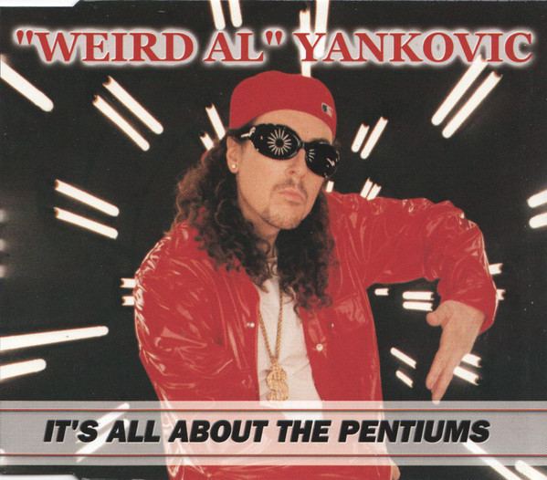

“It's All About the Pentiums” é uma paródia de “It's All About the Benjamins (Rock Remix)”, de Sean “Puff Daddy” Combs, e fala sobre a obsessão do narrador por computadores e componentes de hardware. O título faz referência aos processadores Pentium, da Intel, que eram extremamente populares no final dos anos 1990.
A música foi uma das últimas a serem gravadas para o álbum Running with Scissors, de 1999, e acabou sendo escrita às pressas, poucos dias antes de o álbum ser masterizado. “Weird Al” Yankovic só recebeu a aprovação oficial de Puff Daddy para a paródia quando as sessões finais do álbum já estavam acontecendo. Por causa disso, Al gravou primeiro os instrumentos e os vocais de apoio e terminou de escrever e gravar os vocais principais apenas alguns dias antes da masterização.
Para evitar problemas semelhantes ao que havia acontecido com “Amish Paradise” e Coolio, Al chegou a conversar pessoalmente com Puff Daddy por telefone para garantir sua aprovação. Os vocais femininos da frase “It's all about the Pentiums, baby” não foram creditados originalmente no álbum, embora o Weird Al Archives identifique a cantora como Natasha Barr. A letra também faz várias referências à tecnologia da época, incluindo o Commodore 64, computador lançado em 1982 que possuía 64 KB de memória RAM e se tornou um dos computadores domésticos mais populares de sua geração.
O videoclipe acompanha o clima tecnológico da música e mistura cenas de escritório com uma apresentação fictícia em uma feira de informática. As cenas do escritório foram gravadas no Departamento de Obras Públicas do Condado de Los Angeles, em Alhambra, enquanto o carro que aparece no início é um Nash Metropolitan, o mesmo modelo dirigido pelo personagem George Newman em UHF. A apresentação “ao vivo” do vídeo acontece ficticiamente na COMDEX, uma grande feira de informática realizada anualmente na região de Las Vegas entre 1979 e 2003.
Outra parte marcante do clipe é a sequência gravada em um túnel escuro com iluminação fluorescente, inspirada visualmente no videoclipe de “Mo Money Mo Problems”, de The Notorious B.I.G., que também contava com a participação de Puff Daddy.
It's All About The Pentiums, baby
Uh. Uh-huh, yeah. Uh. Uh-huh, yeah.
It's All About The Pentiums, baby
Uh.
It's all about the Pentiums, baby
It's all about the Pentiums!
It's all about the Pentiums! Yeah!
Whatcha'll wanna do?
Wanna be hackers?
Code crackers, slackers
Wastin' time with all the chatroom yakkers
9 to 5 chillin' at Hewlett-Packard
Workin' at a desk with a dumb little placard
Yeah, payin' the bills with my mad programming skills.
Defraggin' my hard drive for thrills
I got me a hundred gigabytes of RAM
I never feed trolls
And I don't read SPAM
Installed a T1 line in my house
Always at my PC double clickin' on my miz-ouse
Upgrade my system at least twice a day
I'm strictly plug and play
Uh-huh!
I ain't afraid of Y2K
I'm down with Bill Gates, I call him money for short
I phone him up at home and I make him do my tech support
It's all bout the Pentiums, What?
You've got to be the dumbest noobie I've ever seen
You've got White-Out all over your screen
You think your Commodore 64 is really neat-o
What kinda chip you got in there? A Dorito?
You're using a 286? Don't make me laugh
Your Windows boots up in what, a day and a half?
You could back up your whole hard drive on a floppy diskette
You're the biggest joke on the Internet
Your database is a disaster
You're waxing your modem, tryin' to make it go faster
Hey fella! I bet you're still livin' in your parents cellar
Downloadin' pictures of Sarah Michelle Gellar
And postin' "Me too" like some braindead AOL-er
I should do the world a favor and cap you like Old Yeller
You're just about as useless as JPEGs to Hellan Keller
It's all about the Pentiums
It's all about the Pentiums
It's all about the Pentiums, yeah!
It's all about the Pentiums
Now! Whatcha'll wanna do?
Wanna be hackers?
Code crackers, slackers
Wastin' time with all the chatroom yakkers?
9 to 5 chillin' at Hewlett-Packard
Wanna run with my crew, huh?
Rule cyberspace and crunch numbers like I do?
They call me the king of the spreadsheets
Got 'em all printed out on my bedsheets
My new computer's got the clocks,
it rocks,
but it was obsolete before I opened the box
You say you've had your desktop for over a week.
Uh-huh!
Throw that junk away, man, it's an antique
Your laptop is a month old? Well that's great
If you could use a nice, heavy paperweight
My digital media is right protected
Every file inspected, no viruses detected
I've beta tested evry operating system
Gave props to some and others? I dissed 'em
While your computer's crashin', mine's multitaskin'
It does all my work without me even askin'
Got a flat screen monitor 40 inches wide
I believe that yours says Etch-A-Sketch on the side
In a 32-bit world you're a 2-bit user
You've got your own newsgroup: alt-totalloser
Your motherboard melts when you try to send a fax
Where'd you get your CPU? In a box of Cracker Jacks?
Play me online and you know that I'll beat you
If I ever meet you I'll Control-Alt-Delete you
What? What? What? What?
It's all about the Pentiums, Yeah!
It's all about the Pentiums, Yeah!
It's all about the Pentiums, Yeah!
Whatcha'll wanna do?
Wanna be hackers?
Code crackers, slackers
Wastin' time with all the chatroom yakkers?
9 to 5 chillin' at Hewlett-Packard
What?